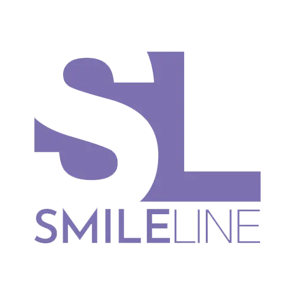

-
 

M Studio to klinika stomatologiczna, której działalność poparta jest ponad 20-letnią praktyką lekarską dr Machana. Wiedza zdobyta we Włoszech i szkolenia odbyte zagranicą, są silną podstawą do oferowania usług na najwyższym poziomie.
Nowoczesne wyposażenie
"Italian style"
lek. dent. Tomasz Machan
Twórca M Studio.Ukończył stomatologię na Uniwersytecie „La Sapienza“ w Rzymie. Członek GIR (Group for Implant Research), Włochy. Członek AIOM (Italian Academy of Microscopic Dentistry). Członek SIE (Italian Society of Endodontics). Wykładowca na wielu międzynarodowych konferencjach. W M Studio zajmuje się rozwiązywaniem trudnych przypadków pacjentów z zakresu implantologii, mikrochirurgii, chirurgii i endodoncji.
lek. dent. Magdalena Sikorska
Jest absolwentką Śląskiego Uniwersytetu Medycznego. Pracowała w Klinice Chirurgii Twarzowo- Szczękowej w Wojskowym Insytucie Medycznym w Warszawie. W 2016 r. ukończyła Curriculum Endodontyczne prowadzone przez wykładowców Polskiego Towarzystwa Endodontycznego. W M Studio zajmuje się endodoncją i stomatologią zachowawczą. Wykonuje drobne zabiegi chirurgiczne. Jej pogodna osobowość potrafi również przemówić do dzieci, które bywają naszymi pacjentami.lek. dent. Weranika Kulik
Nostryfikowała swój dyplom na Uniwersytecie Medycznym w Warszawie. Stara się sukcesywnie i ciągle podnosić swoje kompetencje zawodowe. Uczestniczyła w szkoleniach u jednych z najlepszych polskich specjalistów w każdej dziedzinie stomatologii. Uwielbia tworzyć piękne odbudowy kompozytowe, zajmuje się też: mikroskopowym leczeniem kanałowym, protetyką i przebudową zwarcia oraz prostymi zabiegami chirurgicznymi. Uważa, że dobra rozmowa z pacjentem jest podstawą całego leczenia. Ceni sobie podejście holistyczne do pacjenta, a dokładność i precyzja wykonywania jest na pierwszym miejscu.
lek. dent. Aleksandra Markowska
Absolwentka kierunku lekarsko-dentystycznego na Uniwersytecie Medycznym w Łodzi. W codziennej pracy skupia się na leczeniu zachowawczym oraz periodontologii. Jako jedna z nielicznych wykonuje zabiegi frenotomii wędzidełka języka u noworodków oraz niemowląt współpracując przy tym m.in. z neurologopedami, czy osteopatami. Stale zagłębia zagadnienia dotyczące miofrenuloplastyki, także u dorosłych.mgr Katarzyna Dmochowska dyplomowana higienistka stomatologiczna
W naszym gabinecie jest odpowiedzialna za kompleksową higienę jamy ustnej i przeprowadza pacjentów przez instruktaż mycia i dbania o dalszą higienę w warunkach domowych. Czuwa też nad zespołem medycznym.W M Studio dla zapewnienia naszym pacjentom profesjonalnego leczenia, współpracujemy z partnerami:

Smile Line
Pozwala zapewnić naszym pacjentom kompleksowe i profesjonalne leczenie ortodontyczne. W zależności od potrzeb medycznych pacjentów, pracujemy z aparatami metalowymi tradycyjnymi lub nakładkami Invisalign.ORTHERO
Dostarcza nam komponentów do ortodontycznego leczenia pacjentów metodą nakładkową.3 Dent
Pracownia protetyczna usytuowana w naszym gabinecie. Dzięki stałej obecności technika dentystycznego Jana Owczarczaka, lekarze mają z nim świetny kontakt, co gwarantuje przepływ informacji i znacznie skraca się proces tworzenia prac protetycznych.Mediraty
Absolwentka kierunku lekarsko-dentystycznego na Uniwersytecie Medycznym w Łodzi. W codziennej pracy skupia się na leczeniu zachowawczym oraz periodontologii. Jako jedna z nielicznych wykonuje zabiegi frenotomii wędzidełka języka u noworodków oraz niemowląt współpracując przy tym m.in. z neurologopedami, czy osteopatami. Stale zagłębia zagadnienia dotyczące miofrenuloplastyki, także u dorosłych.Jesteśmy gabinetem partnerskim DR SMILE: